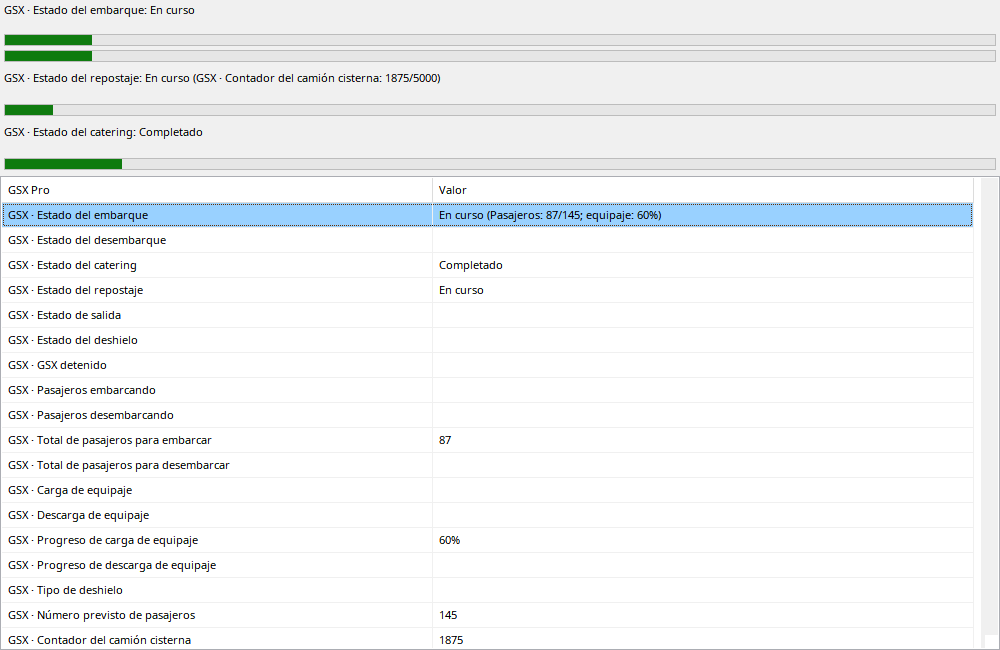

Los servicios siguen solicitud, actividad y final según GSX grabado. Barras aparecen desde Requested; sin objetivo la animación no es porcentaje medido. Boarding puede mostrar pasajeros y equipaje/carga; repostaje cantidad/objetivo. Cambiar cisterna puede reiniciar contador. Retroceder usa valores históricos, no totales finales.
GSX debe suministrar variables compatibles durante la grabación.
| Opción / acción | Funcionamiento y limitaciones |
|---|---|
| Requested | Barra visible al solicitar, no prueba llegada del vehículo ni inicio medido. |
| Boarding / deboarding | Pasajeros/equipaje/carga y objetivos conocidos; no deduce objetivos antiguos de muestras futuras. |
| Repostaje | Cantidad transferida/objetivo y estado de cisterna. Varios camiones/resets posibles; contador no siempre es total del vuelo. |
| Otros | Catering, salida/pushback y deshielo disponibles. Finalización sin medición no necesita contadores intermedios inventados. |
| Replay | Retroceder restaura estado anterior. Descripciones traducidas; SDK crudo en Valores. |
